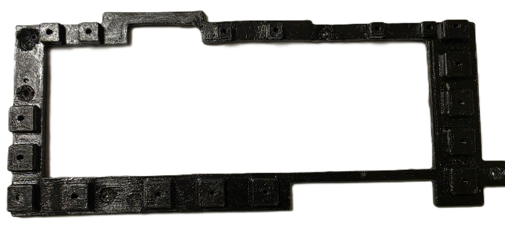
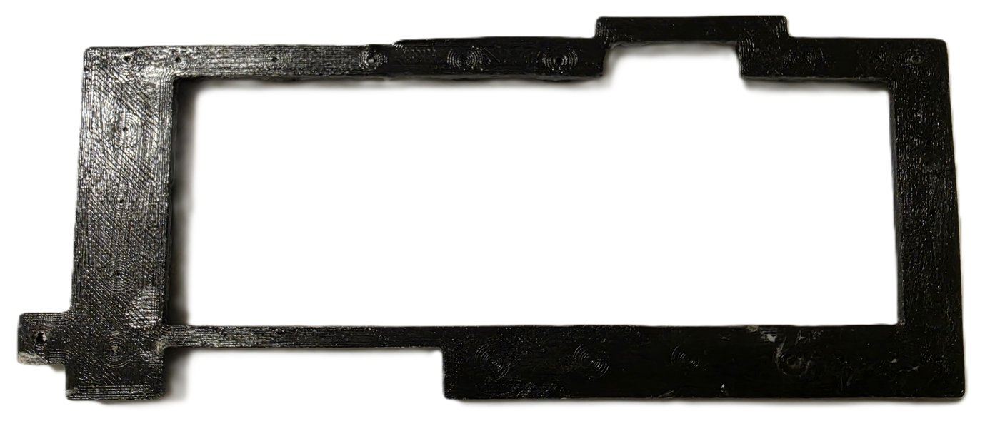
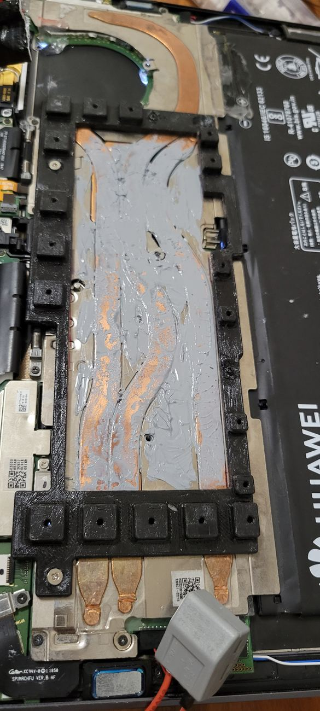
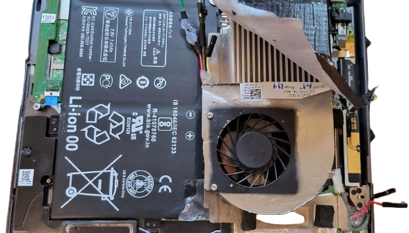
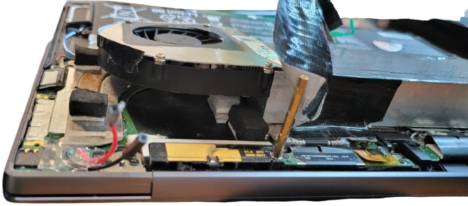
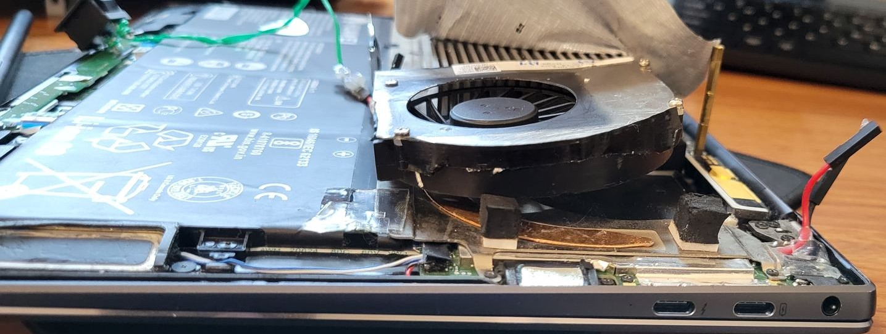
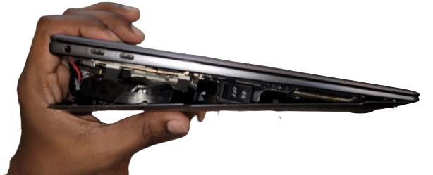

Overclocking a 2018 MateBook X Pro with a DIY Heatsink Mod
Interactive 3D Models
The print files from the build: the two-part mounting frame (shown with a reference model of the heatsink it clamps), the fan duct cover, the two back plates (USB-A side, USB-C side) and the side enclosure. Drag to rotate, scroll to zoom. STL downloads are below the viewer.
The complete two-part frame that clamps the heatsink onto the CPU heat pipes, shown together with a reference model of the heatsink itself: the base plate keys into the stock screw bosses, and the second piece bolts down over it to hold the heatsink in place.
Directs intake air from the new fan straight through the heatsink fins instead of letting it spill around them.
Re-encloses the USB-A side of the chassis where the stock back plate no longer fits over the new hardware.
Re-encloses the USB-C / charging side, keyed to the same stock screw bosses as the heatsink frame.
Encloses the USB-A side profile of the chassis, keyed to the same stock screw bosses as the frame and back plates.
Overview
My 2018 Huawei MateBook X Pro (Intel i7-8550U) cooled its CPU with a small blower fan. That was fine at the stock 15 W settings, but when I raised the CPU's power limits, the temperature spiked within seconds and the clock dropped, often to under 1 GHz for the rest of the task.
To fix this, I added a much bigger heatsink taken from an audio amplifier and clamped it onto the heat pipes with a two-part 3D-printed frame that used the laptop's existing screw bosses. I also replaced the stock fan with a stronger one from another laptop and ducted its air through the heatsink fins. Since the laptop no longer closed, I designed and 3D printed side and back plates to enclose it again. Then I used ThrottleStop to raise the power limits and slightly undervolt the CPU. With these changes, the laptop held 4.0 GHz sustained at 85°C average and 92°C peak. Because every part mounted to existing holes in the chassis, the whole mod could be undone.
Quick Facts
- Stock cooling let the clock fall below 1.0 GHz. With the mod, the i7-8550U held 4.0 GHz on all cores under load.
- Logged 85°C average / 92°C peak under that load in ThrottleStop.
- Clamped an audio-amplifier heatsink onto the heat pipes with a frame I modeled in SolidWorks and 3D printed, using the existing screw bosses (no new holes).
- Replaced the stock fan with a stronger one from another laptop and added a printed duct to push its air through the fins.
- Used a thick layer of thermal paste, trading a little extra thermal resistance for much more contact area.
- Added a switch on the side of the chassis to turn the new fan on and off.
- Traced the power rails using the schematic and board-view files for this board revision.
- Kept it fully reversible: unscrewing the frame and removing the plates returned it to a stock MateBook X Pro.
The Problem: A 15 W Chassis Asked to Do More
The cooling on this laptop was only ever meant for a 15 W chip. With the small stock fan and tight internals, the airflow wasn't sufficient to cool the laptop during high demand tasks.

Measuring the Chassis and Tracing the Board
Before starting the CAD, I measured the spacing, depth and thread pitch of every screw boss in the stock frame. I did this so that the new parts could use holes that were already there instead of needing new ones.
For the electrical side, I used publicly shared schematic and board-view files for this board revision. I found each component on the schematic and then located it on the board view to see where its traces actually went. This was how I told VCC, VSUS and the always-on VS rail apart before touching any connector, and how I later found a clean point to power the new fan and its switch.
Mounting a Heatsink It Was Never Built For
The main part of the mod was a heatsink taken from an audio amplifier, far bigger than anything that could fit inside the original chassis. I clamped it onto the CPU's heat pipes with a two-part frame (view in 3D) that I modeled in SolidWorks from the screw-boss measurements: a base plate that screwed into the existing heatsink holes, and a clamp piece that pressed the heatsink down onto the base plate and the pipes. Since it was held only by screws, I didn't need any glue or drilling.
After printing the base plate, I coated it with a thick layer of polyurethane adhesive to hold the part together at high temperatures without deforming.



I used Arctic thermal paste, and a lot more of it than usual. A thick layer adds its own thermal resistance, but it also filled the uneven gap between the hand-fit aluminum heatsink and the factory-formed copper pipes, so more of the surface made contact. In this case, the extra contact area was worth more than the extra resistance.
Ducting the Airflow
A heatsink this big needed air moving through it, and the stock fan couldn't move enough. So I replaced it with a stronger fan from another laptop, mounted it beside the battery, and designed a 3D-printed duct (view in 3D) shaped around the fins. This forced the air to go through the fins instead of around them.



A Manual Switch for the Fan
The new fan drew more current than the laptop's own fan header could supply, so I couldn't run it from the stock fan control. Instead, I powered it from a rail I found on the board view, through its own switch on the side of the chassis. This let me turn it off when I didn't need the extra cooling (or the noise).

Closing It Back Up
With all this added, the chassis no longer closed flush. Instead of leaving it open, I designed and printed new back plates (USB-A side, USB-C side), a side enclosure and a vented fan cover, and screwed them into the same stock bosses as the heatsink frame. Because of this, removing the plates and unscrewing the frame turned it back into a stock MateBook X Pro in under ten minutes.
Tuning It with ThrottleStop
The new hardware gave the CPU thermal headroom, and I used ThrottleStop to make use of it. I raised the power limits so the i7-8550U could run all four cores at its top 4.0 GHz turbo step instead of falling back. I also reduced the CPU voltage slightly (an undervolt) to cut power dissipation, since lower voltage at the same clock means less heat. This was how I got both the clock speed and the temperatures I wanted. During testing, I also used ThrottleStop to watch the core and package temperatures live.
Results
I logged both numbers in ThrottleStop under a sustained all-core load, the same load that used to make the stock cooler throttle within seconds.
| Metric | Stock cooling | With the mod |
|---|---|---|
| Sustained CPU clock | < 1.0 GHz (kept falling under load) | 4.0 GHz |
| Core temperature under load | Throttling within seconds | 85°C average / 92°C peak |
| Cooling | Stock heat pipe + stock fan | Audio-amplifier heatsink + stronger fan + duct + Arctic paste |
| Chassis modifications | None | None (no drilling, no cutting, fully reversible) |
I kept about 8°C of margin at peak, since the i7-8550U starts throttling at 100°C. I did this so that a hot room or a longer job wouldn't push it into throttling mid-task.
Living With the Bulk
The downside was size. With the heatsink, duct and plates, the laptop became a lot thicker and heavier than the one Huawei sold. But it let me run heavy multicore Python jobs without the clock dropping halfway through, which was the reason I did this mod. It also looked strange enough that TSA once pulled me aside to ask why my laptop had a fan bolted to it.